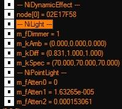
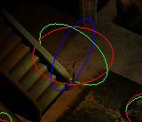
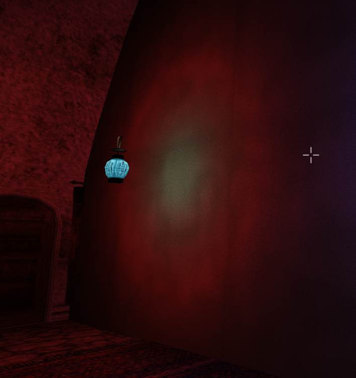
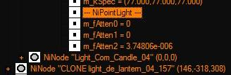
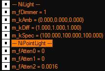
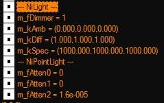
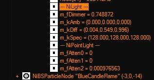

|
|||||


|
|
[LightAttenuation]
|
| ||||||||||||||||||||||||||||
|
UseConstant=1
|
Включает использование этого метода освещения сцены.
Это самый простой метод, общей заливки сцены светом.
Центр проекции, ака сам светильник практически теряется в этом "море света", т.е. центр проекции освещения фактически не различим.
Фактически это создает эффект рассеянного освещения (но не путать с ambient!). Не имеет Method-а и не имеет Mult(иплера).
Т.е. он просто включается и может изменять силу влияния.
Может:
- работать сам по себе, т.е. если =1, а два других метода =0.
- может работать в связке с любым другим типом освещения, если таковой =1.
- будет работать в связке с линейным методом, если OutQuadInLin=1 (при этом Line Quad режимы = 0).
Примечание!
Никак не влияет на глобальное освещение ячеек через Амбиент оных! | ||||||||||||||||||||||||||||
|
ConstantValue=0.8
|
Мощность.
Меньше = Больше!
Чем ниже значение тем ярче освещена сцена. =10 будет темно, эффект практически полностью гаснет.
=0.001 будет вырвиглазно ярко.
| ||||||||||||||||||||||||||||
|
OutQuadInLin=1
|
Если дополнительно включить этот параметр, то:
- В интерьерах все светильники получат активацию второго метода освещения, Линейного.
Т.е. если UseLinear=0, но OutQuadInLin=1, по ССГ видно активацию поля aftten1, которое соответствует активации линейного типа освещения.
- В экстерьерах - произойдет активация третьего поля, вместо второго!
И это Квадратичный метод освещения.
Т.е. да, происходит "свопинг" метода дополнительного освещения сцены! Т.е. описание по этому параметру:
Включает квадратичное освещение в экстерьерах и линейное в интерьерах (с) Верно только от части, точнее, поведение освещения несколько сложнее, чем описывалось ранее. Примечание. =4.88281е-006, это значение радиуса светильника, если оное больше 100ед.
Т.е. если радиус освещения светильника больше 100 единиц, значение силы будет записано не как 0.2 (к примеру) но таким образом.
Если значение меньше 100ед, будет видно значение, как оно указано в мв.ини файле.
Хотя и не всегда!
Т.к. на "формат" записи в полях Aftten, влияют:
- метод (LinearMethod, или QuadraticMethod). - сила, ака значение (ConstantValue, или LinearValue, QuadraticValue).
- умножение радиуса (LinearRadiusMult, или QuadraticRadiusMult).
- радиус самого светильника в настройках редактора.
*если радиус выше 10к, для квадратичного освещения, редактор может сразу улететь в КТД!
*радиус светильника в настройках оного, оказывает наиболее заметный результат.
| ||||||||||||||||||||||||||||
|
|
| ||||||||||||||||||||||||||||
|
UseLinear
|
Линейный метод освещения сцены.
| ||||||||||||||||||||||||||||
|
UseLinear=0
|
Отвечает за активацию этого метода освещения.
1 вкл, 0 выкл.
Этот метод уже позволяет достаточно точно локализовать источники света.
Хотя если перестараться с настройками Силы, то "прожарить" сцену также легко, как и для Константного режима.
Обычно, рекомендуется установить Констант и Квадратик =0. Однако, пространство для экспериментов оказалось много шире.
| ||||||||||||||||||||||||||||
|
LinearMethod=
|
0 1 2 3
Выглядит как поправка к смещению знака после запятой в поле значения силы освещения.
Фактически влияет на яркость освещения в целом.
Как было показано выше, "больше=меньше", чем ниже значение, тем ярче освещение.
= 0 фактически гасит влияние светильников.
= 1, также может погасить все освещение, или сильно понизить яркость. Хотя это странно...
= 2 дает наиболее ЯРКИЙ результат.
= 3, не такое яркое и все работает.
= 4 и выше, похоже значение перестает меняться, сохраняя оное, для =3.
| ||||||||||||||||||||||||||||
|
|
[LightAttenuation] ;оставлено для некой "константности".
UseConstant=1
ConstantValue=0.5
UseLinear=1
LinearMethod=ХХХ ;проверка влияния смены метода.
LinearValue=3.2
LinearRadiusMult=0.0
Примечание. Радиус "лампочки" в игре =100.
| ||||||||||||||||||||||||||||
|
LinearValue=
|
Мощность.
Также как и выше, Меньше=Больше!
Чем ниже значение, тем ярче работают светильники в игре.
Если:
=100, темно как у... или в...
=0.01 ГрандКазино! Все сияет, как не в себя.
| ||||||||||||||||||||||||||||
|
|
UseLinear=1
LinearMethod=3
LinearValue=0.2
LinearRadiusMult=0.0
| ||||||||||||||||||||||||||||
|
LinearRadiusMult=
|
Увеличивает радиус влияния от светильника.
Возможно влияет на зону затухания. Хотя это не так чтобы очевидно.
Фактически, также влияет на яркость.
Т.е. умножает кратно яркость фонариков.
Не имеет отдельного поля, записывается в общее значения силы светильника.
Т.е. в поля Aftten.
| ||||||||||||||||||||||||||||
|
|
| ||||||||||||||||||||||||||||
|
OutQuadInLin=1
|
Также будет оказывать влияние!
Как на смешивания цветов от нескольких светильников в помещение, так и на активацию, в данном случае, третьего поля (ака Квадратичного метода) освещения в экстерьерах. В целом, OutQuadInLin=1 также оказывает положительный эффект на поведения освещения в целом.
Делая оное более ровным в помещениях и стабильным в экстерьерах.
| ||||||||||||||||||||||||||||
|
|
| ||||||||||||||||||||||||||||
|
UseQuadratic=
|
Использование продвинутого (улучшенного) квадратичного освещения.
| ||||||||||||||||||||||||||||
|
UseQuadratic=0
|
Аналогично выше писанному.
Вкл, выкл.
Сам режим, позволяет наиболее точно "локализовать" источники света и их влияние на окружающие предметы.
Если остальные два =0, то здесь =1.
Хотя... да, можно включить все три сразу, но это потребует больших сил и внимания для настроек по вкусу.
Также, Квадратик метод ВСЕГДА активен для экстерьеров, если OutQuadInLin=1.
Т.е. игра автоматически создает этот тип освещения.
Вопрос берутся ли настройки оного из этого раздела .ини файла, или из неких предустановок зашитых в движок, не изучался детально. В целом, игра свободно обходит настройки освещения их .ини файла, отчего ожидать, использования предустановок - весьма вероятно.
| ||||||||||||||||||||||||||||
|
QuadraticMethod=
|
См. выше.
0 1 2 3
Методы, похоже, влияют только на смещения знака после запятой.
Но, возможно и еще на что-то, что не было отмечено (по SSG) либо (SSG) не показывает этого значения.
Отчего (будем считать), что только на "кол-во нулей после запятой", о чем было показано выше, да.
Впрочем, здесь, от смены метода, результаты не столь заметны, как для линейного освещения.
Т.е. смотри лимиты квадратичного освещения.
Этот тип освещения, имеет большие лимиты на предел яркости и, как следствие, затухания.
| ||||||||||||||||||||||||||||
|
QuadraticValue=
|
См. выше, аналогично.
Меньше = Больше.
Выше 10 нет смысла ставить, будет слишком темно.
0.0001 ОЧЕНЬ ярко.
10 - ОЧЕНЬ темно.
| ||||||||||||||||||||||||||||
|
QuadraticRadiusMult=
|
См. выше, аналогично.
Влияет на яркость, на сколько оно влияет на зону затухания, вопрос.
Т.е. при высокой яркости можно видеть пересвет в центре и "ореол" вокруг.
 Изменение только radiusMult не покажет столь заметного эффекта, как изменение QuadraticValue.
Примечание.
Здесь, на скриншоте, высокополигональная стенка, отчего круг света на ней, столь хорошо локализован.
| ||||||||||||||||||||||||||||
|
|
Да, выглядит так, что влияние метода, минимально.
Что =2, что =3, дает одинаковые значения, при большом радиусе светильника.
Т.е. движок уперся в лимиты самого типа квадратичного освещения.
Т.е. квадратичный метод освещения, гораздо более чувствителен к мощности.
Следует оперировать знаками более аккуратно!
Впрочем, подобное поведение описывалось в базовой заметке о вертексном освещении в ниф файлах.
А если поставить 10000 (радиус фонарика) то Редактор, улетит в КТД....
| ||||||||||||||||||||||||||||
|
OutQuadInLin=1
|
См. выше.
Активирует заполнение поля aftten1, ака +второй метод освещения (линейный).
Что создает более плавное смешивание цветов в помещениях в т.ч.
| ||||||||||||||||||||||||||||
|
OutQuadInLin=
|
0 или 1
| ||||||||||||||||||||||||||||
|
|
Собственно, все описано выше.
Позволяет менять состояние полей освещения в зависимости от локации (интерьер, или экстерьер).
В основном, рекомендуется всегда держать, как =1.
Хотя если включены все три типа освещения сразу, держать оное включенным - вопрос...
Примечание.
Если:
UseConstant=0
UseLinear=0
UseQuadratic=0
OutQuadInLin=1
То игра создаст значения в полях aftten фонариков!
Для экстерьера будет активно Aftten2, а для интерьера, дополнительно активирует поле Aftten1.
По крайней мере такое показывает редактор.
Примечание.
Если:
UseConstant=0
UseLinear=0
UseQuadratic=0
OutQuadInLin=0
То игра создает значение только в поле aftten2 (квадратичное освещение), как для интерьера, так и для экстерьера.
Впрочем, как было показано, в это поле попадает радиус указанный в настройках фонарика, а не только значения указанные в мв.ини файле.
Т.е. значения освещения в ини файле, носят, скорее вспомогательное значение, чем основополагающее.
В этом случае, в игре, все освещение будет продолжать работать - "на всю катушку".
Ближе всего, это второй линейный метод. Вырвиглазно ярко.
 Уже показанная свечка в доме Кая (Косадеса), жарит что светодиодный прожектор при первом старте.
И самое "смешное".
Если удалить содержимое этого раздела, либо весь раздел целиком, то игра будет продолжать создавать светильники!
Т.е. все освещение, как в редакторе, так и в игре, продолжит исправно работать!
 Это уже "знакомая" по скриншотам выше "лампочка" с радиусом в 100, создаваемая в редакторе.
Если радиус 1000, то:
 Игра... а внезапно, даже в чем-то лучше начинает работать. Т.е. все освещение работает в квадратичном режиме и довольно аккуратно.
 Снова свечка из дома старины Кая (Косадеса).
| ||||||||||||||||||||||||||||
|
|
|